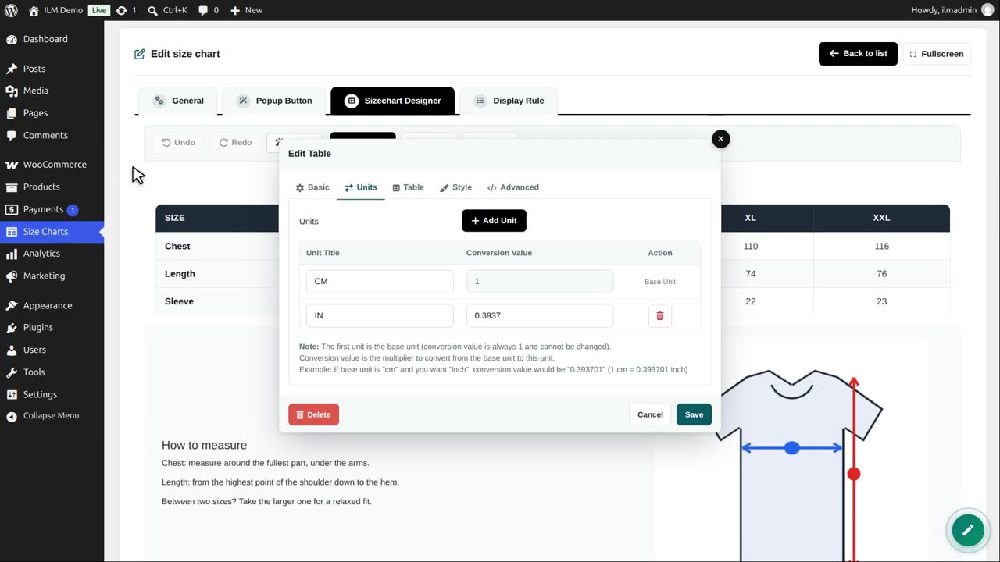
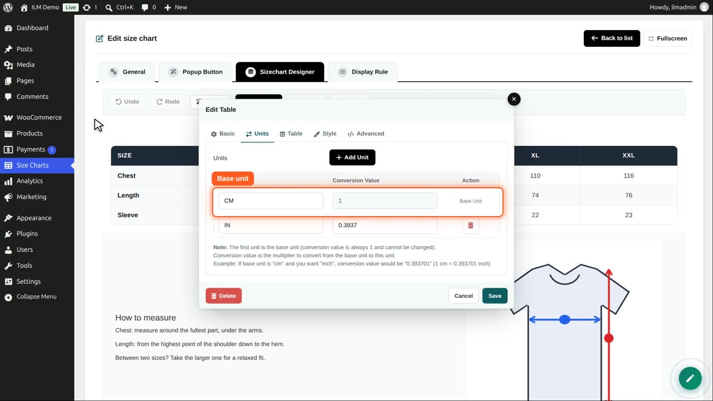
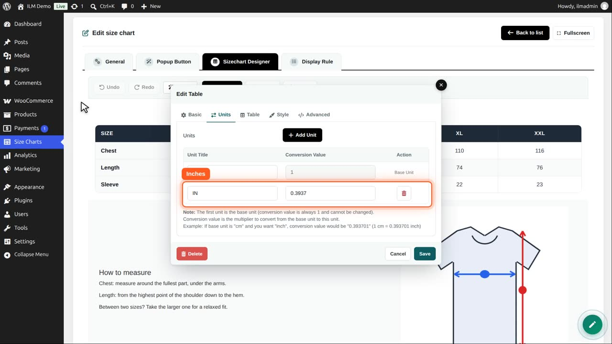
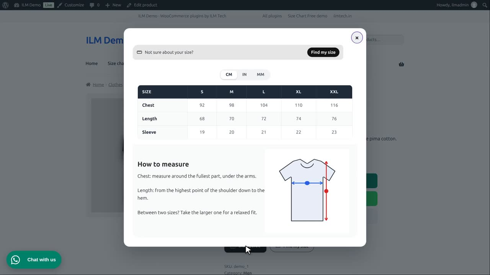
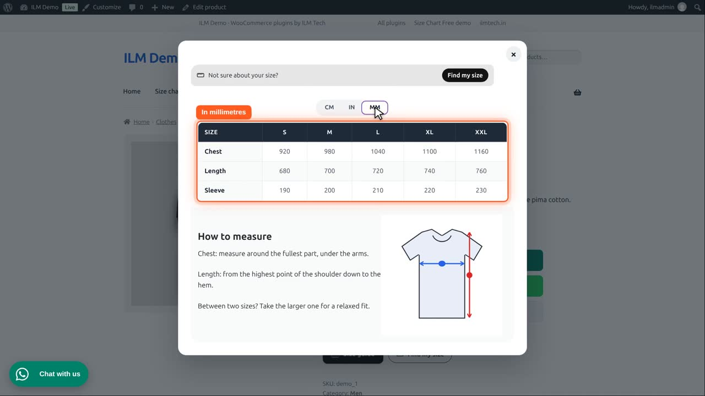

Edit the chart, click the table in the designer, and open the Units tab.

The first unit is the base unit: the unit you typed the numbers in. Here centimetres, so its conversion value is always 1.

Every other unit has a conversion value: what one base unit is in that unit. One centimetre is 0.3937 inches. The numbers are converted for you; text cells stay as they are.

Add Unit adds another: millimetres. One centimetre is 10 millimetres, so its value is 10. The bin deletes a unit.
Save the editor and the chart. In the shop, the switch has three buttons.

MM shows every measurement in millimetres. The shopper choice is remembered on the next product.

A table with only one unit shows no switch at all.